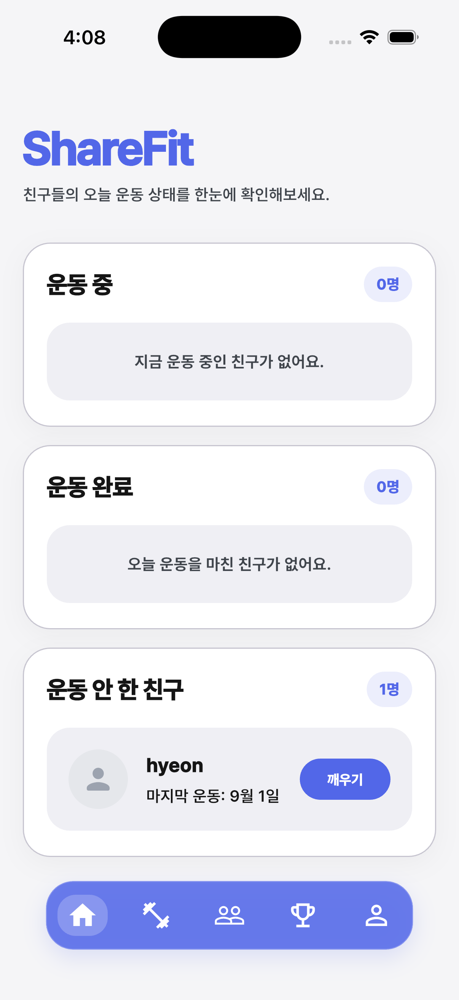
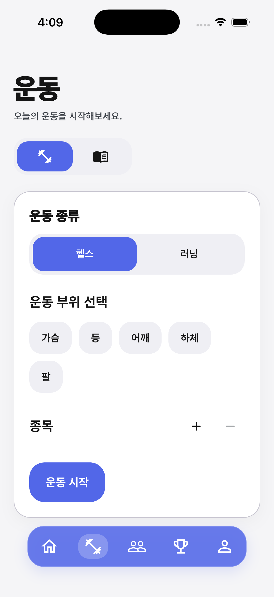
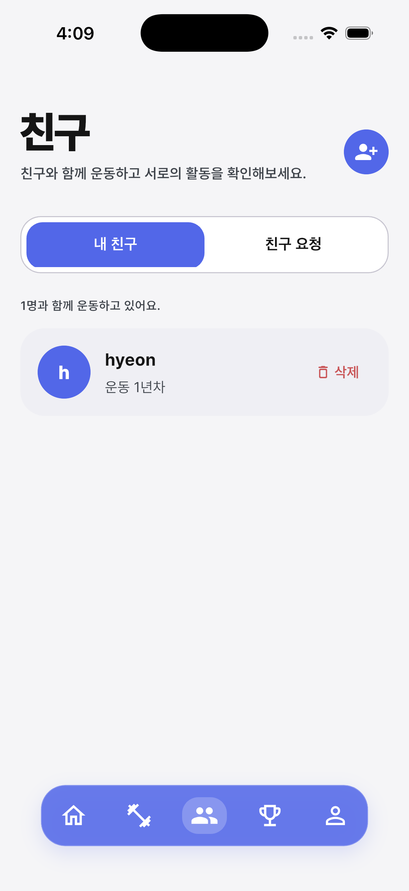
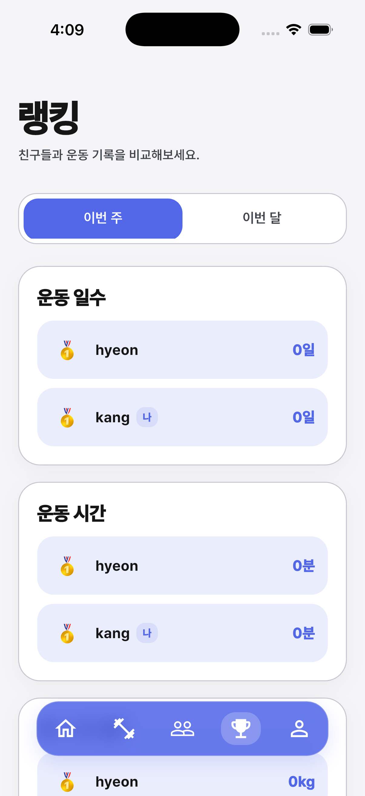
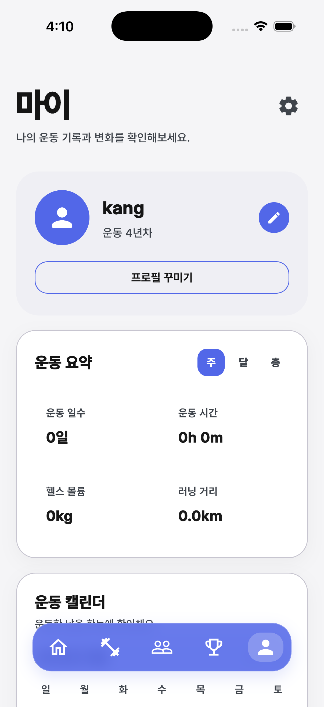

기존에 개발한 운동 공유 앱 ShareFit을 활용하여 백엔드 서버를 직접 구축
현재 ShareFit은 데이터 저장 및 처리를 위해 Firebase를 사용하고 있습니다. 이번 프로젝트에서는 Firebase가 담당하고 있는 부분을 직접 구현해보기 위해 Java Spring Boot와 MySQL을 이용한 백엔드 서버를 구축하는 것을 목표로 합니다.
친구들과 자신의 운동을 공유하고 서로 운동을 지속할 수 있도록 도와주는 앱
대부분의 운동 앱은 개인의 운동 기록이나 운동 방법 제공에 집중되어 있습니다. ShareFit은 친구들과 운동 상태와 기록을 공유하면서 서로 운동을 지속할 수 있도록 돕는 것을 목표로 만든 앱





기존 앱은 gpt와 codex를 이용하여 기능 구현을 중심으로 개발했기 때문에 내부 구조와 데이터 처리 과정을 충분히 이해하지 못한 부분이 있습니다.
이번 프로젝트에서는 기존 앱의 구조부터 직접 분석하면서 백엔드가 어떻게 동작하는지 공부하려고 합니다.
Flutter App
│
▼
Firebase
현재 ShareFit은 Flutter로 앱을 만들고 Firebase를 이용
현재는 앱에서 Firebase의 기능을 이용해 사용자와 운동 등의 데이터를 처리하고 있습니다.
Flutter App (Android Studio)
│
│ REST API
▼
Spring Boot (IntelliJ IDEA)
│
▼
MySQL (MySQL Workbench)
Flutter 앱과 데이터베이스 사이에 직접 만든 Spring Boot 서버를 두려고 합니다.
앱에서 서버에 요청을 보내고, 서버가 데이터를 처리하여 MySQL에 저장하거나 조회한 뒤 결과를 다시 앱으로 전달하는 구조를 구현하는 것이 목표입니다.
기존 앱을 단순히 수정하는 것이 아니라 기존 시스템의 동작 구조를 직접 분석하고, 백엔드의 동작 원리를 공부하면서 Spring Boot와 MySQL을 이용한 서버를 직접 구축하는 것을 목표로 합니다.
기존
Flutter → Firebase
목표
Flutter → Spring Boot → MySQL